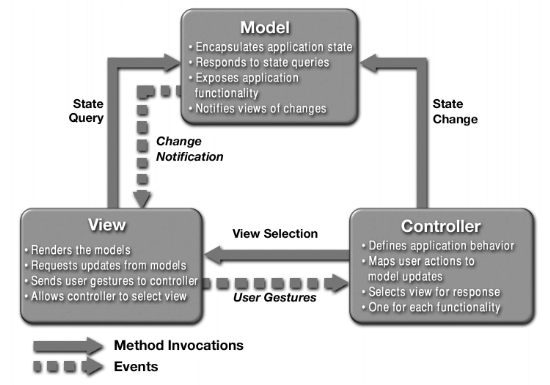

Vijay Ramachandran
January 2002
With the proliferation of JavaTM 2 Enterprise Edition (J2EETM) as a platform of choice for server-side applications, it is crucial for developers to share their experiences and designs. This article introduces some reusable designs you can use to build flexible and easily maintainable J2EE applications.
This article does not explain the patterns with their formal template or UML diagrams. The J2EE BluePrints Program is the place to find these details, along with code samples. This article explains some problem domains that affect the flexibility and maintainability of J2EE applications, and the recommended solutions.
As you design and build different applications, you continually come across the same or very similar problem domains. This leads you to find a new solution for the similar problem each time. To save time and effort, it would be ideal if there was a repository which captured such common problem domains and proven solutions.
In the simplest term, such a common solution is a design pattern. The repository or place of reference that contains these patterns is a design pattern catalog.
A design pattern describes a proven solution, from experienced hands, for a recurring design problem. These solutions are very generic. They are described in well-defined Pattern Templates, with the most popular template defined by the Gang of Four.
The pattern template usually includes a name that gives an idea as to what that pattern is about, followed by where the pattern is applicable, the motivation, the issues in implementation, and so on. Apart from describing the problem and illustrating the solution, the pattern also explains the implementation issues involved and consequences, if any, of using the pattern.
Use of such patterns makes the design of an application transparent. These patterns have been used successfully by developers in their respective fields, and therefore, the pros and cons of the pattern (as well as implementation issues) are known beforehand. All design patterns are reusable and can be adapted to particular contexts. This gives you flexibility. The use of design patterns related to J2EE applications gives the added advantage of showing solutions in terms of J2EE platform technologies.
Multi-tiered J2EE applications consist of a number different views and components in the middle tier, possibly distributed. The following sections of this article suggest some design patterns that can help you keep typical J2EE applications extensible, flexible, and maintainable. Instead of discussing some abstract scenarios, this articles takes an imaginary sample application and tries to give you an understanding of these patterns in the context of this sample application. Once you know the sample application it is easier to extend the use of these patterns to other application scenarios.
Take the case of an enterprise application for financial services over the web. Visitors to this site can browse through the list of services, create accounts, place orders for the products made available by the financial service, and so on. Also assume that this application allows existing customers to change their account details and profile, make use of services, and so on. Typically this kind of application has multiple views or screens which users click through to search for lists of services, access profiles, use the services, and to get other information. The business logic represents the user's account, profile, the catalog of services, ordering for services, and so on, as separate entities in the form of Enterprise JavaBeansTM (EJBTM). With this sample application in mind, look at some recurring problems and see how you can use specific patterns to build a flexible and maintainable application.
Problem Domain
All would be well if you were building this enterprise application for a single type of client. If that were the case, we could simply mix the data access / data modifying logic with the logic for the various client views. But with the advent of the completely interconnected and wireless world, there are client devices ranging from PDAs to cell phones to a browser on a powerful desktop, in addition to other types of traditional clients. In this scenario, solving this problem by mixing data access with views is problematic because
Suggested Solution
In finding a solution for this problem, take note that:
You need a solution that lets you develop loosely-coupled applications. The Model-View-Controller (MVC) architecture is the suggested solution. MVC has been used very effectively in GUI-type applications. By applying the MVC architecture to a J2EE application, you can separate the data access logic from the data presentation logic. You can also build a flexible and easily extensible controller that controls the whole flow of the application. The figure below depicts the MVC architecture.
The MVC architecture can be mapped to multi-tiered enterprise J2EE applications as follows:
Applying the above logic to the sample financial application, you build the application as follows:
It is very difficult to fully showcase the MVC architecture in the form of a small example code. The Java Pet Store Demo application from the J2EE BluePrints Program is a good example of a complete J2EE application that is based on the MVC architecture.
Points to Note
Here are some points to note:
Problem Domain
MVC gave you a way of architecting the whole application in a loosely coupled manner. Now look at a specific problem domain that arises frequently. In this sample application, the views or screens that the user sees depend on what the user is doing. These screens are highly interactive (such expecting the user to choose services, enter preferences, contact information, and so on) and these pages are highly interdependent.
In the absence of any pattern, this application will be a collection of interdependent web pages. That makes the application very hard to maintain. Extending this application to accommodate more web pages (probably for offering more services) is difficult because of the interdependency of these web pages:
These problems only worsen as the application grows in complexity. The problem, in terms of MVC architecture, is how to manage the complex interactions between the VIEW and the CONTROLLER.
Suggested Pattern
To address these problems, the suggested solution is the Front Controller pattern. This pattern solves the problems by channeling all client requests through a single object, the Front Controller. This central object then processes all requests, decides on the next view to be displayed, and implements all security required for protection. Templating of views can also be achieved through this centralized object. Centralizing the decision on the next view, along with other functions like security, makes changing these functions easy: you change only a small area of the application and the change is reflected across all views/screens of the application.
The following small sample code gives an idea of the implementation. The first step is to ensure that all requests are serviced by a single object, the Front Controller. A central servlet to process all incoming requests is the best choice for the J2EE application. To do this, the web.xml file of the web
component of this application is changed as follows (this code fragment assumes /sample_app to be the context root for all views of this sample application):
Code Sample 1: Part of the web.xml of the sample application that forces all web requests to be routed through a single Servlet -- the Front Controller
<web-app>
<!-- the web.xml file of the web component of
the sample application -->
<!-- all other specs -->
<servlet>
<servlet-name>CentralEntryPoint</servlet-name>
<servlet-class>FrontControllerImpl</servlet-class>
</servlet>
<servlet-mapping>
<servlet-name>CentralEntryPoint</servlet-name>
<!-- The following forces all web page requests of this
application to be routed through the front controller -->
<url-pattern>/sample_app/*</url-pattern>
</servlet-mapping>
<!-- all other specs -->
</web-app>
The above specification in web.xml ensures that all requests that have /sample_app, as the context root is channeled through the central servlet, called as the FrontControllerImpl. This is what the code for FrontControllerImpl would look like:
Code Sample 2: FrontControllerImpl.java that implements the central servlet -- the Front Controller -- that processes all requests
// all required imports
// exceptions to be caught appropriately wherever applicable
public class FrontControllerImpl extends HttpServlet {
// all required declarations, definitions
public void init() {
// do all init required
}
public void doPost(HttpServletRequest request, HttpServletResponse
response)
throws IOException, ServletException {
doGet(request, response);
}
public void doGet(HttpServletRequest request, HttpServletResponse
response)
throws IOException, ServletException {
String currentPage= request.getPathInfo();
// check the requested page
// apply all required security checks
// process the request
// depending on the result of
the processing, decide on the next page
// forward to the next page
}
}
Note that in the above implementation of the FrontController servlet, all decisions regarding how to process the request and selection of the next page is done by the servlet. But as the size of the application grows with more views and different processing requests, this servlet code could become unmaintainable very quickly. But this can be easily overcome by specifying how to handle incoming requests, the next view to be displayed in response to the current request in an XML configuration file. If you do this, then the central servlet simply builds a hashtable from the XML file. This hashtable can later be used to take decisions on how to process the current request, what is the next view, and so on. The XML file that maps all these information would look like:
Code Sample 3: RequestMappings.xml file that maps incoming requests to their processors and next screen
<request-mappings>
<url-mapping url="/request1" useRequestHandler="true"
requiresSecurityCheck="true"
nextScreen="screen2.jsp">
<request-handler-class>
com.blah1.blah2.blah3.request1Handler</request-handler-class>
</url-mapping>
<!-- other requests and their corresponding mappings -->
</request-mappings>
Once the above specification is available for the central servlet, then the Front Controller servlet will change a bit, as shown below:
Code Sample 4: FrontControllerImpl.java that implements the central servlet and uses the mapping file
// all required imports
// exceptions to be caught appropriately wherever applicable
public class FrontControllerImpl extends HttpServlet {
// all required declarations, definitions
private HashMap requestMappings;
public void init() {
// load the mappings
from XML file into the hashmap
}
public void doPost(HttpServletRequest request, HttpServletResponse
response)
throws IOException, ServletException {
doGet(request, response);
}
public void doGet(HttpServletRequest request, HttpServletResponse
response)
throws
IOException, ServletException {
String currentPage= request.getPathInfo();
// get all mapping info for "currentPage" from the hashmap
// if "securityCheckRequired
= true", do the security check
// if "useRequestHandler = true",
pass on the incoming request to the specified handler
// forward the results to the given "nextScreen"
}
}
The central servlet implemented in this way is easy to maintain, as only the XML mapping file needs to be updated for changes such as screen flow, new security requirements, and new ways of handling a request. Adding new screens is also very simple. The Front Controller pattern can be an effective way to simplify the complex interactions between the VIEW and CONTROLLER of a J2EE application.
Points to Note
Here are some points to note while deciding to use this pattern:
Problem Domain
The Front Controller pattern gave you a way to efficiently manage the complex user interactions of a J2EE application based on the MVC architecture. That pattern simplified the handling of screen flow and subsequent user request handling. It also made additions and changes to the screen flow much easier.
Another common problem is changes that the client(s) of an application require when enterprise beans, representing the business logic of the application, are added or changed. Look at this problem in the context of the sample scenario.
Typically, to represent the account of an user, the sample application has an EJB that implements the business logic pertaining to the account details (such as name, login ID, and password) and an EJB that handles personal profile of the user (such as personal preferences, language preference, and display style preference). When a new account is created or an existing account is modified, the client (JavaServer PagesTM (JSPTM), servlets, or standalone application clients) must have access the account details EJB, as well as the personal profile EJB to read, store, and update all the details of the user. There is a kind of workflow involved.
Of course, this is a very simple case. There may be a much larger workflow required when a user places an order for a service offered, such as checking the user's account or credit status, getting appropriate approvals, and placing the order. In this case, to implement the complete workflow, the client(s) must have access to the account EJB to complete the appropriate task. The code sample below shows a servlet client that handles orders placed by a customer.
Code Sample 5: A servlet that does the workflow required for placing an order
// all required imports;
// exceptions to be caught appropriately wherever applicable;
// This servlet assumes that for placing an order the account and
// credit status of the customer has to be checked before getting the
// approval and committing the order. For simplicity, the EJBs that
// represent the business logic of account, credit status etc are
// not listed
public class OrderHandlingServlet extends HttpServlet {
// all required declarations, definitions
public void init() {
// all inits required done here
}
public void doPost(HttpServletRequest request, HttpServletResponse
response)
throws IOException, ServletException {
// other logic as required
// Get reference to the required EJBs
InitialContext ctxt = new InitialContext();
Object obj = ctxt.lookup("java:comp/env/ejb/UserAccount");
UserAccountHome acctHome = (UserAccountHome)
PortableRemoteObject.narrow(obj, UserAccountHome.class);
UserAccount acct = acctHome.create();
obj = ctxt.lookup("java:comp/env/ejb/CreditCheck");
CreditCheckHome creditCheckHome = (CreditCheckHome)
PortableRemoteObject.narrow(obj, CreditCheckHome.class);
CreditCheck credit = creditCheckHome.create();
obj = ctxt.lookup("java:comp/env/ejb/Approvals");
ApprovalsHome apprHome = (ApprovalsHome)
PortableRemoteObject.narrow(obj, ApprovalsHome.class);
Approvals appr = apprHome.create();
obj = ctxt.lookup("java:comp/env/ejb/CommitOrder");
CommitOrderHome orderHome = (CommitOrderHome)
PortableRemoteObject.narrow(obj, CommitOrderHome.class);
CommitOrder order = orderHome.create();
// Acquire the customer ID and order details;
// Now do the required workflow to place the order
int result = acct.checkStatus(customerId);
if(result != OK) {
// stop further steps
}
result = credit.checkCreditWorth(customerId, currentOrder);
if(result != OK) {
// stop further steps
}
result = appr.getApprovals(customerId, currentOrder);
if(result != OK) {
// stop further steps
}
// Everything OK; place the order
result = order.placeOrder(customerId, currentOrder);
// do further processing as required
}
}
The code above shows a single client. If this application supports multiple types of clients, each type of client will have its own code implementing this workflow logic. In such a scenario, if one of the EJBs that implements part of the workflow is modified, then all the clients initiating the workflow must be changed. If the nature of interactions between the EJBs that implement the workflow undergoes a change, then the client(s) must be made aware of this. If a new step is introduced in the workflow in the form of a new EJB, once again all the client(s) need to be changed.
It is very hard to manage the EJBs that require corresponding changes in the client(s). Moreover, the client(s) have to make separate remote calls for each of the EJBs to implement the complete workflow. This increases the network traffic and is not very efficient. As the application's complexity grows, this problem gets worse.
Suggested Pattern
The solution for this recurring problem is to insulate the client(s) from any changes that happen in the set of EJBs they use. The suggested solution is the use of the Session Facade pattern. The facade, which is implemented as a session bean, provides a unified interface for a set of enterprise beans that implement a workflow. As a result, the client(s) which trigger a workflow use this unified interface provided by the facade. Any changes in the underlying EJBs that implement the workflow and any change to the workflow itself result in a change to the facade only.
Look at a sample code that implements this idea. First review the code for a facade that handles workflow related to orders placed by customers.
Code Sample 6: A session facade that does the workflow required for placing an order
// All imports required
// Exception handling not shown in the sample code
public class OrderSessionFacade implements SessionBean {
// all EJB specific methods like ejbCreate defined here
// Here is the business method that does the workflow
// required when a customer places a new order
public int placeOrder(String customerId, Details orderDetails)
throws RemoteException {
// Get reference to the required EJBs
InitialContext ctxt = new InitialContext();
Object obj = ctxt.lookup("java:comp/env/ejb/UserAccount");
UserAccountHome acctHome = (UserAccountHome)
PortableRemoteObject.narrow(obj, UserAccountHome.class);
UserAccount acct = acctHome.create();
obj = ctxt.lookup("java:comp/env/ejb/CreditCheck");
CreditCheckHome creditCheckHome = (CreditCheckHome)
PortableRemoteObject.narrow(obj, CreditCheckHome.class);
CreditCheck credit = creditCheckHome.create();
obj = ctxt.lookup("java:comp/env/ejb/Approvals");
ApprovalsHome apprHome = (ApprovalsHome)
PortableRemoteObject.narrow(obj, ApprovalsHome.class);
Approvals appr = apprHome.create();
obj = ctxt.lookup("java:comp/env/ejb/CommitOrder");
CommitOrderHome orderHome = (CommitOrderHome)
PortableRemoteObject.narrow(obj, CommitOrderHome.class);
CommitOrder order = orderHome.create();
// Now do the required workflow to place the order
int result = acct.checkStatus(customerId);
if(result != OK) {
// stop further steps
}
result = credit.checkCreditWorth(customerId, currentOrder);
if(result != OK) {
// stop further steps
}
result = appr.getApprovals(customerId, currentOrder);
if(result != OK) {
// stop further steps
}
// Everything OK; place the order
int orderId = order.placeOrder(customerId, currentOrder);
// Do other processing required
return(orderId);
}
// Implement other workflows for other order related functionalities (like
// updating an existing order, canceling an existing order etc.) in a
// similar way
}
Once this facade is available, the servlet code of Code Sample 5 is easy to implement, as shown below.
Code Sample 7: A servlet that uses the session facade to place an order
// all required imports
// exceptions to be caught appropriately wherever applicable
public class OrderHandlingServlet extends HttpServlet {
// all required declarations, definitions
public void init() {
// all inits required done here
}
public void doPost(HttpServletRequest request, HttpServletResponse
response)
throws IOException, ServletException {
// other logic as required
// Get reference to the session facade
InitialContext ctxt = new InitialContext();
Object obj = ctxt.lookup("java:comp/env/ejb/OrderSessionFacade");
OrderSessionFacadeHome facadeHome = (OrderSessionFacadeHome)
PortableRemoteObject.narrow(obj, OrderSessionFacadeHome.class);
OrderSessionFacade facade = facadeHome.create();
// trigger the order workflow
int orderId = facade.placeOrder(customerId, currentOrder);
// do further processing as required
}
}
As shown, with the facade, the logic in the client (in this case, the servlet) becomes very simple. Any change to the workflow requires a change in one place: the facade. There is no need to update the client(s), as they can continue to use the same interface. Moreover, the same facade can implement the workflows for other processes (in the sample code, for example, the workflows related to orders, such as updating an existing order and removing an existing order). This lets you use the same facade for different client actions requiring different workflows. In such a case, the flexibility that a facade provides, to keep the application easily maintainable, multiplies in importance.
Points to Note
Here are some points to note while deciding to use this pattern:
Problem Domain
So far you have seen patterns that can be used to build flexible and easily maintainable J2EE applications. The patterns, in essence, decouple different tiers of the application as much as possible. But there is one more coupling that needs to be addressed: the EJBs that represent data in the database. They include code (like SQL) specific to a database. EJBs that have database-specific SQL code, are, in a sense, coupled to the database type. If the database type is changed, all such EJBs must undergo change.
To define the problem in a more general way: having data resource specific code in EJBs makes a tight coupling between the application and the type of data resource. This can result in an inflexible and unmaintainable application. The code below shows an EJB that has SQL embedded in it. For simplicity, the code home and remote interface of the EJB are not shown.
Code Sample 8: An EJB that has SQL code embedded in it
// all imports required
// exceptions not handled in the sample code
public class UserAccountEJB implements EntityBean {
// All EJB methods like ejbCreate, ejbRemove go here
// Business methods start here
public UserDetails getUserDetails(String userId) {
// A simple query for this example
String query = "SELECT id, name, phone FROM userdetails WHERE name = " + userId;
InitialContext ic = new InitialContext();
datasource = (DataSource)ic.lookup("java:comp/env/jdbc/DataSource");
Connection dbConnection = datasource.getConnection();
Statement stmt = dbConnection.createStatement();
ResultSet result = stmt.executeQuery(queryStr);
// other processing like creation of UserDetails object
result.close();
stmt.close();
dbConnection.close();
return(details);
}
}
Suggested Pattern
The answer to this problem lies in decoupling the EJBs from the data resource. Such a decoupling lets you change the data resource type very easily. The suggested pattern for this is the Data Access Object (DAO) pattern. This patterns removes the data access specific logic from the EJBs and puts them in a separate interface. As a result, the EJBs carry on with their business logic and use the Data Access Objects whenever they need to read or modify the data they represent. This implementation does not couple the EJBs with their data resource. A change of data resource requires only a change in the Data Access Objects.
The sample code listings below show an example of this decoupling. The first step is to create the Data Access Object. Code Sample 9 shows a DAO for the UserAccountEJB of Code Sample 8.
Code Sample 9: A Data Access Object that encapsulates all data resource access code
// All required imports
// Exception handling code not listed below for simplicity
public class UserAccountDAO {
private transient Connection dbConnection = null;
public UserAccountDAO() {}
public UserDetails getUserDetails(String userId) {
// A simple query for this example
String query = "SELECT id, name, phone FROM userdetails WHERE name = " + userId;
InitialContext ic = new InitialContext();
datasource = (DataSource)ic.lookup("java:comp/env/jdbc/DataSource");
Connection dbConnection = datasource.getConnection();
Statement stmt = dbConnection.createStatement();
ResultSet result = stmt.executeQuery(queryStr);
// other processing like creation of UserDetails object
result.close();
stmt.close();
dbConnection.close();
return(details);
}
// Other data access / modification methods pertaining to the UserAccountEJB
}
Now that you have a data access object, the UserAccountEJB can use that object
and thereby decouple itself from an data resource specific code. This is shown in the
code sample below.
Code Sample 10: An EJB that uses a DAO
// all imports required
// exceptions not handled in the sample code
public class UserAccountEJB implements EntityBean {
// All EJB methods like ejbCreate, ejbRemove go here
// Business methods start here
public UserDetails getUserDetails(String userId) {
// other processing as required
UserAccountDAO dao = new UserAccountDAO();
UserDetails details = dao.getUserDetails(userId);
// other processing as required
return(details);
}
}
Any change in the data resource now only requires a change in the DAO. Moreover, to enable an application to support different types of data resources, you can develop different data access objects for different types of data resources, and then specify the data resource to be used as part of the deployment environment of the EJB. In such a case, the EJB can get the DAO through the use of a factory object, which in turn gets the DAO to be used from the deployment environment. An application implemented this way can easily change from one type of data resource to another, as there is no code change required. An example of this implementation is shown in the Java Pet Store demo code of the J2EE BluePrints Program.
Points to Note
Here are some points to note when deciding to use this pattern:
In this article, you have seen design patterns that you can use effectively to build a J2EE application. The patterns--MVC architecture, Front Controller, Session Facade, and Data Access Object--focus on decoupling different tiers and layers to achieve the flexibility and maintainability.
The Java Pet Store Demo sample application and the patterns catalog of the J2EE BluePrints program give formal definitions of the patterns, along with UML diagrams and working sample code. If you want to discuss these patterns:

Vijay Ramachandran is a member of the J2EE BluePrints team for Sun Microsystems, and contributed to the recent Java Pet Store sample application. He is currently focusing on the Web services features of forthcoming J2EE releases.